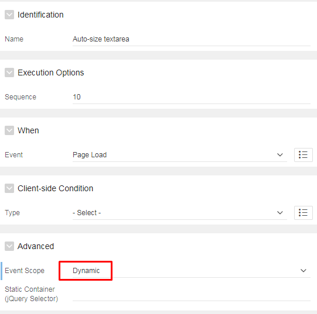
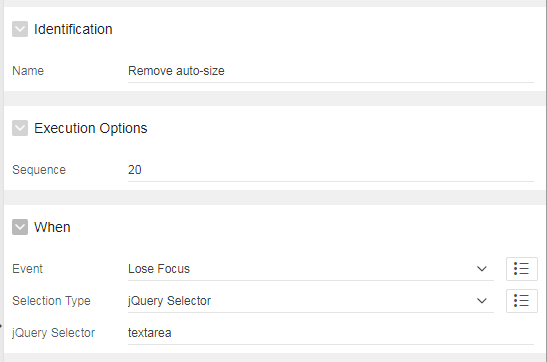

Scrolling through textareas can be difficult to read when you have a fixed height but a lot of text in it. What if you could somehow make it responsive but still keep default design when page loads?
Step 1: add dynamic action on Page load with Event ScopeDynamic:

Create new True action (JS) and add the following code:
let textarea = document.querySelectorAll('textarea');
textarea.forEach(function(textarea) {
textarea.addEventListener('click', autoresize);
textarea.addEventListener('keydown', autoresize);
});
function autoresize(){
let el = this;
setTimeout(function(){
el.style.cssText = 'height:auto; padding:0';
el.style.cssText = 'height:' + el.scrollHeight + 'px';
},0);
}
Step 2: -To make textarea get back to its default size, create another Dynamic action on Lose focus with jQuery selector textarea:

In True action save this code:
$('textarea').css('height','auto')
Note: If you only have one textarea on the page, you don't have to use the forEach. The only difference is in that case you need querySelector instead of querySelectorAll:
let textarea = document.querySelector('textarea');
textarea.addEventListener('click', autoresize);
textarea.addEventListener('keydown', autoresize);